ادویه گلستان
طعمدهندههای درجه یک
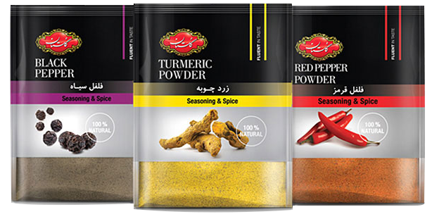


ادویهها جزء جداییناپذیر غذاها هستند. یار كمكی آشپزها برای عطر و طعمبخشیدن به هر غذایی. كمتر كسی را میتوان پیدا كرد كه به معجزه ادویه ایمان نداشته باشد. پودرهای رنگارنگ تند و ترش و شیرینی كه به غذا هویت و روح میبخشند.
ادویه گلستان از دل طبیعت برآمده است؛ خالص، طبیعی و تهیه شده به دور از هرگونه مواد شیمیایی و نگهدارنده. همین موضوع باعث شده تا عطر و طعم آنها با دیگر ادویههای موجود در بازار متفاوت شود. گلستان با ایجاد تنوع در محصولات و ارائه بالاترین كیفیت، رنگین كمان جذابی از ادویه را فراهم آورده است كه نمونهاش هیچ كجای دیگری پیدا نمیشود. با گلستان آشپزی از همیشه لذتبخشتر است.
انواع ادویه جات گلستان از مرغوب ترین و خالص ترین نوع ادویه جات در دنیا تهیه می شود و پس از تایید کیفیت و تست های آزمایشگاهی، توسط دستگاه های تمام اتوماتیک بدون کمترین دخالت دست آسیاب و بسته بندی می شود.
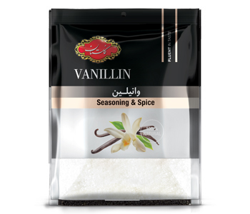
رایحهای دلپذیر برای شیرینیهای فراموشنشدنی
وانیل گلستان با عطر گرم و لطیف خود، انتخابی بینقص برای افزودن طعمی دلنشین به انواع دسر، شیرینی، کیک و نوشیدنی است. این محصول با کیفیت از بهترین مواد اولیه تهیه شده و در بستهبندی استاندارد و مقاوم در برابر رطوبت، با وزن ۱۵ گرم عرضه میشود.
با وانیل گلستان، به دنیای شیرین عطرها قدم بگذارید و در هر قاشق از دسر خود، لذتی متفاوت را تجربه کنید.
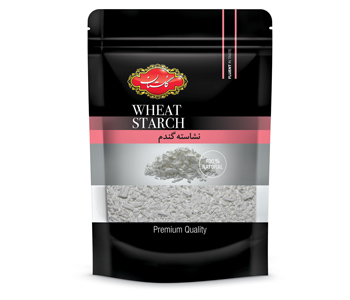
نشاسته گلستان از گندم مرغوب ایرانی تهیه شده است. این محصول پس از کنترل کیفیت و سلامت در بستهبندی بهداشتی عرضه میشود. نشاسته سرشار از كربوهیدرات است و به دلیل بافت خود در تهیه انواع دسر و شیرینی بهکار میرود.
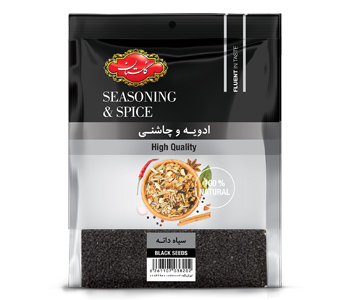
سياهدانه داراي طبيعت گرم و خشم و در طب ايراني با نام شونيز معرفي شده است. اين گياه در مناطق مختلف جنوب غرب آسيا، اروپا و شمال آفريقا بومي شده است، در ايران در اراك و اصفهان كشت مي شود. سياهدانه در ماههاي تير و مرداد جمع آوري مي شود. از سياهدانه به عنوان ضد نفخ، ضد آسم، ضد سرفه، ضدالتهاب، مقابله با خستگي، تقويت سيستم ايمني بدن و تقويت پوست و مو استفاده مي شود. سياهدانه علاوه بر ترشيجات در تهيه دمنوش، املت و یا به عنوان چاشني با پنير در وعده هاي صبحانه يا عصرانه قابل استفاده مي باشد.
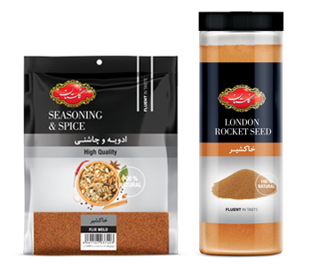
نوشیدنی سنتی خوش طعم که به کاهش وزن وتصفیه خون کمک می کند خاکشیر گلستان به صورت کاملا پاک شده و در بسته بندی بهداشتی عرضه می شود.
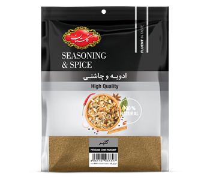
گلپرادویه ای معطر و خوش طعم با خواص چربی سوزی می باشد. گلپر گلستان به صورت کاملا پاک شده و در بسته بندی بهداشتی عرضه می شود.
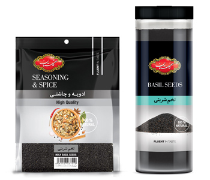
تخم شربتی گلستان به صورت کاملا پاک شده و در بسته بندی بهداشتی عرضه می شود. تخم شربتی اغلب به عنوان یک نوشیدنی سنتی خوش طعم که به کاهش وزن و تنظیم آب بدن کمک می کند استفاده می شود.
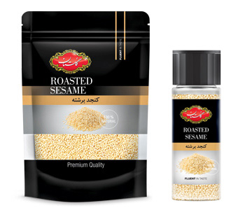
کنجد گلستان به صورت پاک شده و در نوع بسته بندی سلفون و پت عرضه می شود. کنجد به عنوان یک چاشنی خوش طعم، مغذی و سرشار از انواع ویتامین ها جایگاه ویژه ای نزد آشپزان حرفه ای دارد.
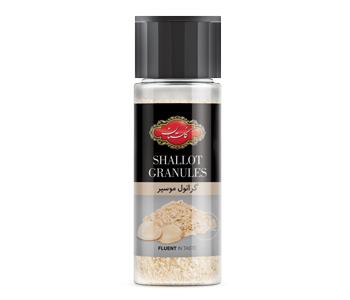
گیاه موسیر، گیاهی است چند ساله از خانواده سیر و پیاز که به همان اندازه از خواص دارویی برخوردار است. موسیر سرشار از ویتامین C، پتاسیم، فیبر، اسید فولیک،کلسیم و آهن است و منبع خوبی از پروتئین محسوب میشود. این مادهی غذایی مفید، عطر و بوی فوقالعادهای به غذاهایتان میدهد. از موسیر گلستان میتوان در تهیهی انواع ترشیجات، سالاد، ماست، سس و غیره استفاده کرد. بوی موسیر به مراتب کمتر از سیر است.
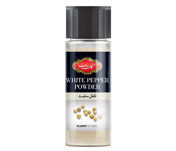
فلفل سیاه و سفید هر دو، دانه های یک گیاه می باشند. اگر دانه های رسیده گیاه در زیر نور خورشید خشک شوند فلفل سیاه به دست می آید، اما اگر پس از رسیدن در آب خیس بخورند و پوست آنها جدا شود، فلفل سفید به دست می آید.
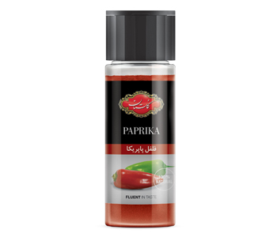
پاپریکا نوعی ادویه است که از آسیاب کردن فلفل خشک شده بهدست میآید. این ادویه عموماً ترکیبی از فلفل دلمهای و فلفل های تند است و ترکیب آن در کشورهای مختلف مطابق ذائقه مردم متفاوت است. پودر پاپریکا گلستان دارای طعمی ملایم بوده و به هیچ عنوان تند نیست. این ادویه برای افزودن رنگ، طعم و عطر در بسیاری از غذاها مورد استفاده قرار میگیرد. پودر پاپریکا گلستان را میتوان در انواع سالاد، پیتزا، لازانیا، پیراشکی، خوراکها و خورشتهای گوشتی، ماهی و … مصرف کرد.
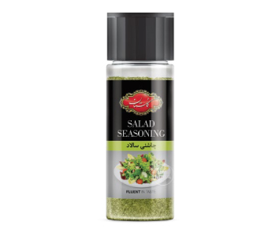
این چاشنی ترکیب منحصر بهفردی از ادویه ها و سبزیجات خاص است که میتوان آن را در انواع سالاد و سس مورد استفاده قرار داد.
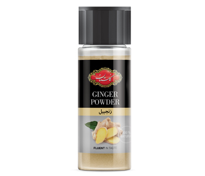
زنجبیل خواص بیشماری دارد. فرقی نمیکند که تازه، خشک و یا به صورت پودر باشد. این ادویه ضدالتهاب طبیعی، ضد تهوع است. زنجبیل سرشار از ویتامینهایC،D ، B، مواد معدنی مثل پتاسیم، کلسیم، منیزیم، مس و زینک میباشد. زنجبیل گلستان یک مادهی انرژیزای قوی محسوب میشود. زنجبیل باعث هضم بهتر و سریع غذا میشود. ترکیبات موجود در این گیاه با اثر گذاشتن روی مخاط معده و روده باعث بهبود عملکرد آنها میشود. پودر زنجبیل گلستان در تهیه نان، شیرینیجات، آبنبات، شکلات قابل استفاده است. این ادویه همچنین در ادویهجات، ترشیجات، ماسالا، آب گوشت، کاری، سس و غیره استفاده میشود.
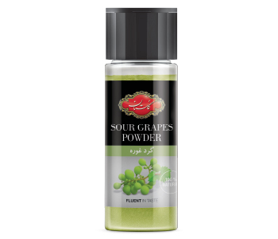
گرد غوره گلستان از خشک و پودر کردن غوره بدست می آید این ادویه رودهها را ضدعفونی میکند در درمان زردی موثر است. گرد غوره گلستان کبد را تقویت میکند. گرد غوره را میتوان در انواع غذاها مانند خورشتها (قیمه بادمجان، مرغ و مسما و ..) انواع خوراک، ته چین و کتلت مورد استفاده قرار داد.
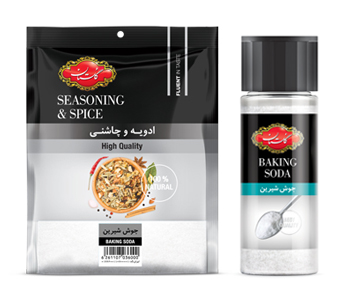
جوش شیرین گلستان علاوه بر کاربرد در آشپزی، مصارف دیگری نیز دارد که از جمله آن میتوان به سفید کردن دندان، درمان آکنه و جوش صورت، لایهبردار و از بینبرنده جوشهای سرسیاه، رفع بوی بد بدن و پا، دهانشویه، تسکین نیشزدگی و گزیدگی حشرات، سفید کردن و از بین بردن لک کثیفی البسه اشاره کرد.
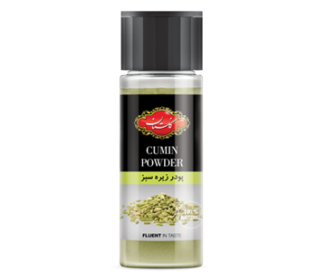
یکی از انواع زیره، زیره سبز است که خواص فراوانی دارد و در غذاهای زیادی میتواند استفاده شود. استفاده از زیره سبز به روشهای صحیح برای لاغری بسیار موثر است. پودر زیره سبز گلستان خواص بسیاری برای سلامت بدن دارد و مصرف آن کمک شایانی به درمان برخی بیماریها میکند. از خواص دیگر زیره سبز گلستان میتوان به دفع گاز معده و روده، درمان مشکلات مثانه و کلیه، رفع برونشیت اشاره کرد.
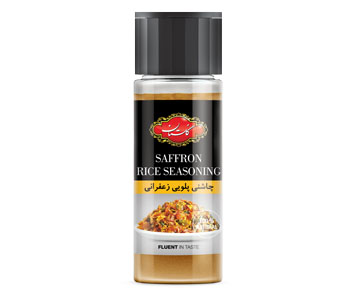
چاشنی پلویی زعفرانی گلستان مناسب برای استفاده در انواع پلوهای مخلوط است. این چاشنی رنگ ، عطر و طعم بسیار مطلوب و دل انگیزی به غذا میدهد. چاشنی پلویی زعفرانی گلستان حاوی عطر زعفران، هل، خلال پوست پرتقال است. گلستان تنها چاشنی پلویی حاوی زعفران بازار است.
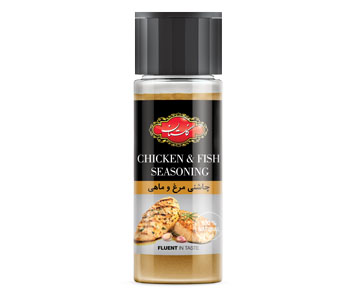
چاشنی مرغ و ماهی گلستان برای از بین بردن بوی نامناسب مرغ و ماهی پیش از طبخ بسیار مناسب است. چاشنی مرغ و ماهی گلستان همچنین متعادلکننده طبع سرد و گرم این غذاهاست. این ادویه را باید به مرغ هنگام تفت دادن و به ماهی حداقل نیم ساعت قبل از سرخ کردن اضافه کرد
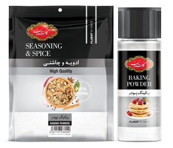
بیکینگ پودر گلستان برای پف کردن کلوچه، پنکیک،کیک، شیرینی و نان و یا دیگر محصولاتی که از خمیرهای شل ساخته میشوند، مورد استفاده قرار میگیرد. یک قاشق چایخوری بیکینگ پودر گلستان دارای 5 کالری و 12 درصد از مقدار توصیه شده روزانه سدیم است. این مقدار کمی کلسیم و پتاسیم را به رژیم غذایی شما می دهد.
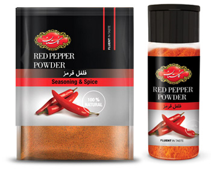
این ماده غذایی به هضم غذا، رفع گرفتگی عضلات و كاهش ریسک ابتلا به بیماریهای قلبی كمك ميكند. فلفل قرمز خالص و اعلای گلستان در بسته های سلفونی و پت با مدرن ترین دستگاه های اتوماتیک در شرایط کاملا بهداشتی و فاقد هر گونه آلودگی توليد مي گردد.
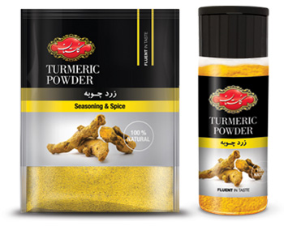
اين ماده غذايي پرمصرف ضدعفونی کننده، کاهش دهنده چربی خون، محافظ معده و… می باشد. زردچوبه خالص و اعلای گلستان به صورت سلفونی و پت بسته بندی شده و با دستگاه های اتوماتیک عاری از هرگونه آلودگی و کاملا بهداشتی عرضه می گردد.
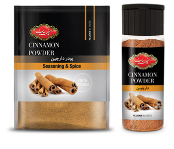
این ماده غذایی سرشار از مواد معدنی مورد نیاز بدن از جمله منگنز، آهن و کلسیم و همچنین فیبر میباشد دارچین خالص و اعلای گلستان در بسته های سلفونی و پت با مدرن ترین دستگاه های اتوماتیک در شرایط کاملا بهداشتی و فاقد هر گونه آلودگی توليد مي گردد.
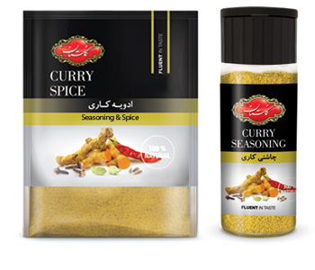
ادویه کاری ترکیبی منحصر به فرد از ادویه جات و کاری اعلا در بسته های سلفونی و پت بسته بندی شده با مدرن ترین دستگاه های اتوماتیک در شرایطی کاملا بهداشتی و فاقد هر گونه آلودگی توليد مي گردد.
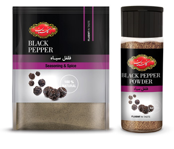
خواص آنتی اکسیدانی، سرماخوردگی، ضد سرفه وعطر مطبوع فلفل سیاه، اين ماده غذايي را بسيار محبوب كرده است. فلفل سیاه خالص و اعلای گلستان در بسته های سلفونی و پت گرمی بسته بندی شده با مدرن ترین دستگاه های اتوماتیک در شرایط کاملا بهداشتی و فاقد هر گونه آلودگی توليد مي گردد.
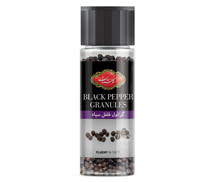
گرانول فلفل سیاه گلستان حاوی دان نیم کوب فلفل سیاه است که بدون نیاز به آسیاب کن (grinder) میتوان از طعم و عطر فلفل سیاه خالص لذت برد. این محصول خلوص بسیار بالایی دارد و دیده شدن دانههای فلفل سیاه در آن حس خوبی را به مصرفکننده میبخشد. گرانول فلفل سیاه را میتوان در انواع غذاها شامل: سالاد، استیک، سس، سوپ، خوراک، خورشت و غیره استفاده کرد.
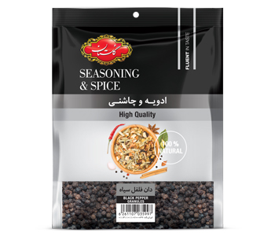
دان فلفل سیاه گلستان میوههای خشک شده تیره رنگ گیاه فلفل است. گیاه فلفل بومی جنوب هند است. طبع فلفل گرم و خشک است. دان فلفل سیاه گلستان مقوی معده است. فلفل سیاه گلستان همچنین مقوی حافظه و اعصاب و مسکن دردهای عصبی است.
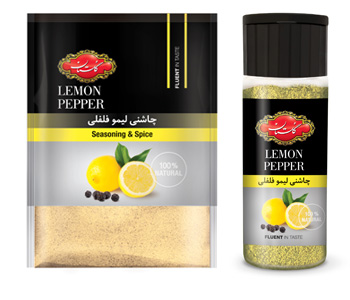
ادویه لیمو فلفلی گلستان با طعم و ترکیبی منحصر به فرد از ادویه جات درجه یک همراه با عصاره ی طبیعی لیمو می باشد و در بسته های سلفونی پت بسته بندی شده و با مدرن ترین دستگاه های اتوماتیک در شرایطی کاملا بهداشتی عرضه می گردد.
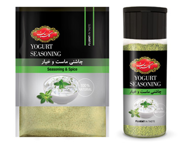
ادویه ماست و خیار ترکیبی منحصر به فرد از ادویه جات و سبزیجات معطر و مرغوب در بستههای سلفونی و پت بستهبندی شده با مدرنترین دستگاههای اتوماتیک در شرایطی کاملا بهداشتی و فاقد هر گونه آلودگی توليد میگردد.
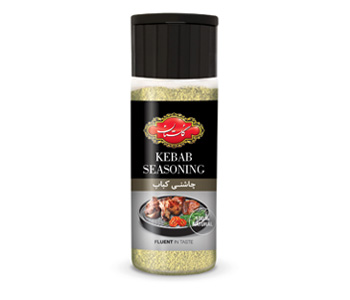
ادویه كبابی گلستان با ترکیبی منحصر به فرد از ادویه جات درجه یک همراه با عصاره ی طبیعی پياز می باشد كه بافت گوشت كباب را لطيف و خوش طعم مینمايد و در بستهبندی پت با مدرن ترین دستگاههای اتوماتیک در شرایطی کاملا بهداشتی عرضه میگردد.
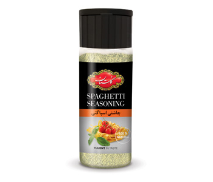
اين ادويه با ترکیبی منحصر به فرد از ادویهجات درجه یک طعمی بسيار خاص به غذای شما میدهد. اين چاشني را مي توان در پيتزا، لازانيا، خوراك و… نيز استفاده نماييد.
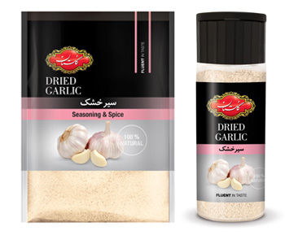
اين ماده غذايی پرخاصيت به کاهش فشار خون و کاهش خطر بیماریهای قلبی كمك میكند. گرانول سير خالص گلستان بصورت سلفونی و پت بستهبندی شده و با دستگاههای اتوماتیک عاری از هرگونه آلودگی و کاملا بهداشتی عرضه میگردند.
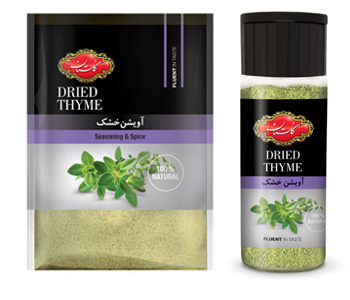
اين ماده غذايی خوشعطر و خوش طعم در رفع تنگی نفس و سرفه، درمان سیاه سرفه، برونشیت، عفونت ریه، سرماخوردگی، آنفلوانزا و برای درمان نفخ و گرفتگیهای عضلانی استفاده میشود. آويشن خالص گلستان بصورت سلفونی و پت بستهبندی شده و با دستگاههای اتوماتیک عاری از هرگونه آلودگی و کاملا بهداشتی عرضه میگردند.
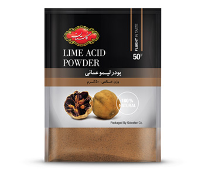
این میوه از نظر کلسیم و پتاسیم و ویتامین C غنی بوده و به عنوان کاهنده ی فشار خون و چربی خون شناخته شده است. پودر لیمو عمانی خالص و اعلای گلستان در بسته سلفونی با مدرنترین دستگاههای اتوماتیک در شرایط کاملا بهداشتی و فاقد هر گونه آلودگی توليد میگردد.
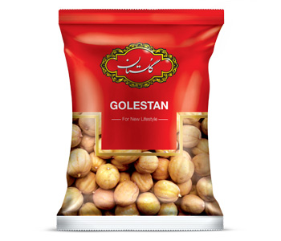
لیمو خشک شده دستچین شده درجه یک ایرانی در سایزهای یکسان بدون تلخی در اختیار مصرفکننده قرار گرفته است. لیمو عمانی گلستان طبعی سرد و خشک دارد و در پخت بسیاری از غذاهای ایرانی، دمنوشهای گیاهی کاربرد دارد. لیمو عمانی گلستان از نظر کلسیم و پتاسیم غنی بوده و از نظر ویتامین C. از سایر مرکبات پیشی گرفته و به عنوان کاهنده فشار خون و چربی خون شناخته میشود.
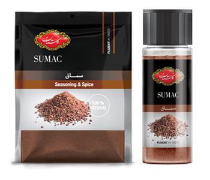
سماق مملو از ویتامین C و اسیدهای چرب امگا 3 است و از بیماریهای قلبی عروقی و سکته مغزی جلوگیری میکند. سماق خالص و اعلای گلستان در بستههای سلفونی با مدرنترین دستگاههای اتوماتیک در شرایط کاملا بهداشتی و فاقد هر گونه آلودگی توليد میگردد.
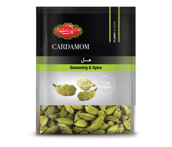
هل درجه يك و اعلای گلستان در بسته سلفونی با عطر و کیفیتی منحصر به فرد بستهبندی شده با مدرنترین دستگاههای اتوماتیک در شرایط کاملا بهداشتی و فاقد هر گونه آلودگی توليد میگردد.
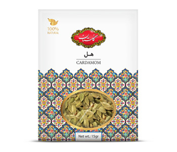
هل سبز، گیاهی متعلق به مناطق گرم با رایحهای بسیار خوش بو و معطر است كه از آن به عنوان ملكه ادویهجات نام برده میشود. هل در فرهنگ ایرانی جایگاه ویژهای دارد به نحوی كه چای همراه با هل یكی از پرطرفدارترین نوشیدنیهای گرم است. هل سبز، چاشنی معطریست که در طبخ غذا، پخت نان و شیرینی و مربا استفاده میشود. از جمله فواید سلامتی هل سبز گلستان میتوان به این موارد اشاره كرد: کمک به سلامت قلب و عروق، كنترل كلسترول، ویژگیهای ضد میكروبی و سمزدایی، بهبود گردش خون، خوشبو كننده نفس
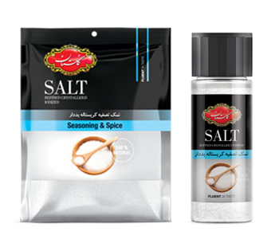
نمک تصفیه یددار گلستان شامل نمکی است که در آن ناخالصی های نامحلول و همچنین ناخالصی های محلول مانند آهک، شن و ماسه طی فرآیندی در کارخانه حذف شده است. نمک خوراکی باید از نوع ید دار و تصفیه شده باشد. نمک تصفیه یددار گلستان به دلیل خلوص بالا میزان ید را بهتر و به مدت بیشتر حفظ میکنند. نمک تصفیه نشده به علت داشتن ناخالصی در افرادی که سابقه بیماری های گوارشی، کلیوی و کبدی دارند و حتی مصرف مداوم آن در افراد سالم منجر به بروز ناراحتی های گوارشی، کلیوی، کبدی و حتی کاهش جذب آهن در بدن می شود.
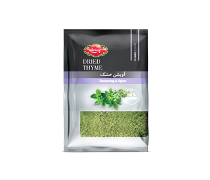
ادویه ها و چاشنی های تک پرسی گلستان، شامل سماق، فلفل قرمز، لیمو فلفلی، آویشن، ماست و خیار، سالاد و کبابی در بستههای سلفون (تک پرسی) با مدرنترین دستگاههای اتوماتیک تولید میشود. این محصول انتخاب مناسبی برای هتلها، رستورانها و سازمانها است.
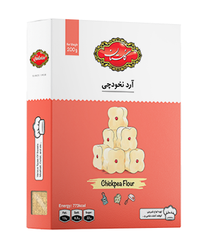
آرد نخودچی گلستان، انتخابی عالی برای علاقهمندان به آشپزی و شیرینیپزی است. این آرد درجه یک با وزن 200 گرم، با کیفیت بسیار بالا و بستهبندی کاملاً بهداشتی عرضه شده است و در انواع شیرینی، کتلت، شامی، کوکو و سوخاری مورد استفاده قرار میگیرد.